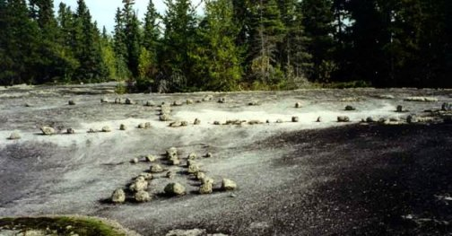

Tie Creek Site
The Petroform sites are a teaching place, a healing place, one of those sites which have been referred to as a "door-way or portal to other worlds". They are physical reminders of instructions given to native people by the spirits. The native legends refer to the Whiteshell as the area that Anishinabe call "Manito Ahbee" (where God sits). They believe this the place where original man received his instructions.
Home New
Time Shaman NEW
Tie Creek 2 Updated
Researching Sites - New
{kind=link}
Complete Site

Tie Creek Feature # 3
Petroform sites are rock and boulder arrangements that ancient shamans designed on the ground to serve many purposes. In Manitoba the biggest and oldest site is the Tie Creek area located in the Whiteshell Provincial Park. Here boulders were placed on flat rock out-crops of the Precambrian Shield. Depending on the age and location, the shapes are geometric symbols with human or animal shapes appearing in newer sites. The largest site is the Tie Creek site and is the largest ancient site in North America. This site consists of a 10-acre main area with single element satellite sites in close proximity. The primary Tie Creek site is believed to be 5000-2500 years old and consists of geometric symbols. My research on the site dates back to 8000 years with many additions to it as time went on (I will give these dates further on). Thousands of years ago this primary site was hidden for unknown reasons deep into the "back country" away from any trails or canoe routes. Today it is still hidden from the public, but for good reason, that being it’s very vulnerable to destruction. Archeologists believe that the Whiteshell sites in Canada are the start or nucleus of this cultural motif. This is because the Whiteshell area contains most of the elements that the other sites in North America have. The other sites on this continent having only one or more elements while Tie Creek has them all.

Feature 1
Feature #3
New Info.
If we were to simply use our intellect to understand the design or purpose of ancient sites, our findings would lead us to more questions than answers. Shamans and Mystics, the creators of these sites used their abilities to access extended levels of consciousness not intellect for the site’s individual design.
The web is full of theories as to why the ancient sites were built but the difference between this material and all others, is the source of the material. The book, "The Schematic of God" was given to me by nonphysical sources, as universal knowledge. Through my prior training using "Out of Body" and shamanic journeying I have traveled back in time consulting with the past shamans and mystics in a common multidimensional continuum. This is the same source of knowledge the ancients tapped into and it does not come from the intellect. In this reality, life on our planet exists because of its ability to connect to the energy sources that support and allow its creation. With enhanced knowledge the ancients knew how to increase this energy. Their structures were tools that allowed them to become very efficient at creating physical abundance and spiritual awareness. Each site had different purposes at different times but there is a common format in all the designs.
The instructions were given to me on a step-by-step basis over a seven-year period. I will likewise release it in the format that I had received. The main reason is it takes time to "digest" the knowledge due to the complexity of the design or its schematic. The information was lost in history because of this complexity, they lacked the teaching and record keeping tools that we have today. Pictographs and actual experience became the recorders of this knowledge and this died with the old ones.
This information has been organized in my book "The Schematic of God" for those who require a deeper understanding of these teachings. Although the information in the book is complete at this level, I am offering additional diagrams and material that expands on the subject.
{kind=link}
Feature #4
{kind=link}
Tie GPS Waypoints
{kind=link}
Tie Creek Site #7
Tie Creek Site #7 the Wave
Bannock Point Site
Tie Creek Feature # 1
Aerial view of Feature # 1 and Feature # 4 (to the right)
{kind=link}
Alonsa/Glenella
The sites and their designers are similar in concept with many understandings that have filtered or survived throughout the millenniums. The fragments of this knowledge can be seen in Feng Shui and the East Indian practice of Vastu Vidya, which predates Feng Shui. As I was finishing this book I came across a book on Vastu Vidya and was delighted to see the basics were there in print. Feng Shui and Vastu Vida are proof that this information was there in the past but through time only small pieces survived. In Vastu Vidya they understand there was a grid, that directions are important, and that different energies associated to different directions and placement in the grid were affecting creation. They also recognize the tilt of the earth as having something to do with it all. I know with confidence that thousands of years ago the designers of this philosophy understood much more than has survived today. I also recognize their shortcomings in only seeing the singular plane or slice of the total information package. The grid they describe is two-dimensional and is shown as a flat grid when in fact it should be a cube grid or three-dimensional in construct. Feng Shui, like the practitioners of Vastu Vidya, also recognized that building alignment and angle placements were important. This same importance was given to the ancient sites and their alignments. These alignments are in reference to a nonphysical structure that we also share with the sun and stars. However, the sharing is due to our placement in the overall structure itself and its association is more important than visual alignment.
Having the knowledge to connect to the proper elements was not as easy as we think today. Without compasses and charts the ancients would first have needed to find north, and this would give them all the other angles needed. They did this by first hammering a wooden stake (called a gnomon) into the ground (see above diagram). A circle was then drawn around it, using a piece of string twice the length of the height of the gnomon. Where the shadow of the gnomon touches the circle at sunrise and sunset marked the east and west directions. Two large circles were then drawn using these intersecting points as their centers. These were called the "head and the tail of the fish", indicating true north and south. The intermediate directions were located by drawing four large circles using primary compass points as their centers and where the circles overlap indicated the exact compass points, as in the above diagram.
The photo and diagram above shows an ancient Petroform from the Whiteshell, in Manitoba (Bannock Point). The ancient shaman that designed this one was using the prescribed method of finding north and thus his/her desirable 135 degrees. This degree has a very specific use and energy. More will be provided as time goes on, but for now I can say it was to connect to the elemental or slower vibratory levels. The left picture is the actual site element and to the right is a diagram showing the ancient shaman’s method, which is very similar if not exactly as the described methods form the Old-World.
How the sites work is extremely complicated and it would take the resources of a very knowledgeable shaman/priest. Once the site was built, all could have benefited from its properties. Unfortunately once the original designer was gone, the site could fall victim to others, unfamiliar with designing or misdirected in purposes, or the site was maintained for different needs being synchronized to the cultural needs of the time. The new mystics that came "on line" would obtain and redesign for their own cultural needs. Thus different spiritual or physical needs would be incorporated into the sites and still keep the original site.
People who study the sites have observed that around the world there are common angular positions or directions that the sites would be aligned to. Also noted was that a group of sites on one side of the planet would be aligned in the same angular direction as a completely different site, on the other side of the globe. Both groups of sites could not be visually seeing the same star or planet configuration regardless of the time of day. How then could this be possibly be related to individual constellations or an astronomical point? It can’t but there is another reason for alignments in common directions. Some of the common directions noted around the world are; 12 to19.5 degrees, 52 to 54.5, and 110 to135 degrees. In the Manitoba Whiteshell area, archeologists have for years noticed that the ancient Petroforms (rock mosaics) were aligned at 53.5 degrees. It puzzled them as they scrambled to relate it to something. The sun, moon, and stars had to be the answer, but there was never any valid association found.
In other places the researchers noticed very accurate planning of the city structures with puzzling twisted or out of pattern buildings. Why would a supremely superior "alignment" culture like the Maya have such scattered pyramids in a complex? Below is an example of this advanced civilization purposely building on a slant to the other structures on the site. One has only to look at the statistics of the main pyramid at Chichen Itza to see how incredibly accurate the Maya could get with their alignments and measurements.
The energy lines are the "records" in stone of the human focus and activities at the site. They can show and teach us what was of interest to ancient ones.
The ancient sites are of little value to modern humans. They are of great value in understanding how and what can be gleamed from the nonphysical in order to create a more balanced and abundant world. These past site alignments belong in the past. If we are to understand how to extract the benefits, we must understand alignments.
The next page called "Dowsing" will show how some of these lines connect. They show the activities as "energy records" in stone.
Note to researchers:
If you want to research ancient sites you must first determine true north or magnetic north. After that all angles must be noted in your diagram of the site (photos have little value). This includes the slant of the "leaning stone" or the structure’s tilt (pyramid). It is in these angles that the truth is waiting. There is a great deal of excellent documentation on the web and in books. Unfortunately the most important parts are not noted because of the absence of the unknown pertinacity. The understanding and the purposes are bigger than the ancient sites. It is about life and all that forms this reality with consistency in structure that is a unified understanding of the universe. The angles show the directions to the creative sources. These directions are not about astronomical objects (including the sun) but are to areas that these objects may or may not occupy. The answers are in these areas and are not part of humanity's current knowledge (metaphysical or scientific). More will be revealed as time goes on.
Below is a Google map to the Bannock Point area. Tie Creek is located in the upper right corner area (no roads or trails).
View Larger Map
Below: The Alonsa/Glenella Site
View Larger Map
The Schematic of Time and Ancient Sacred Sites -New